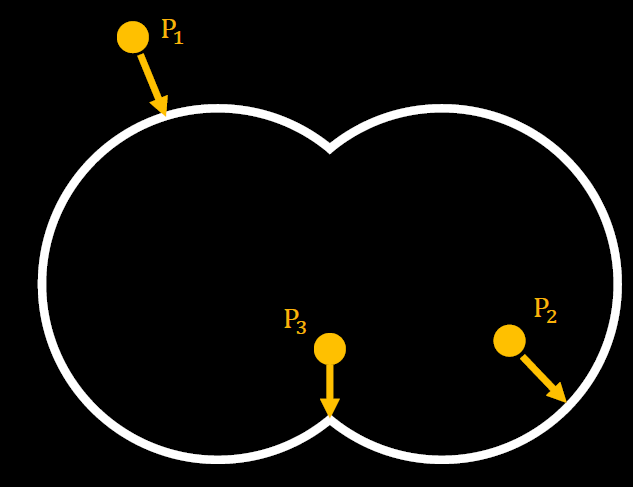
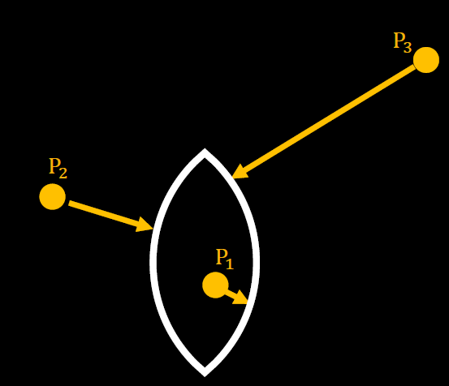
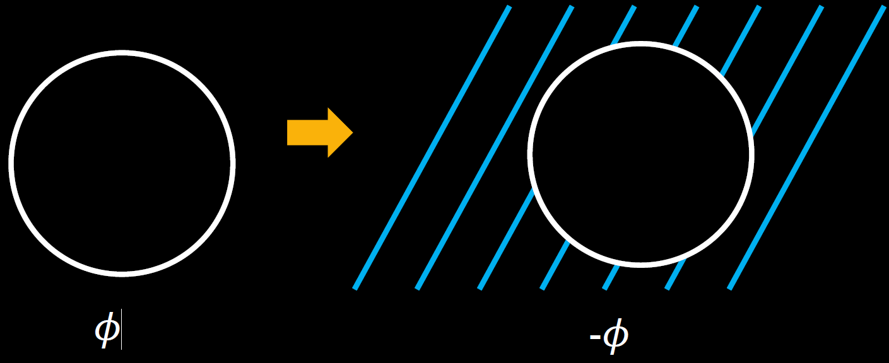
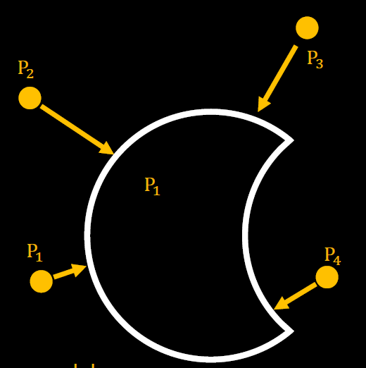
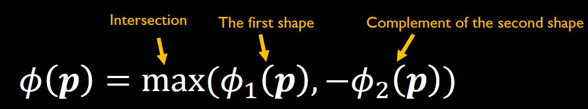
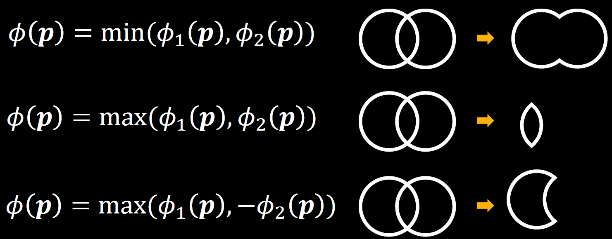
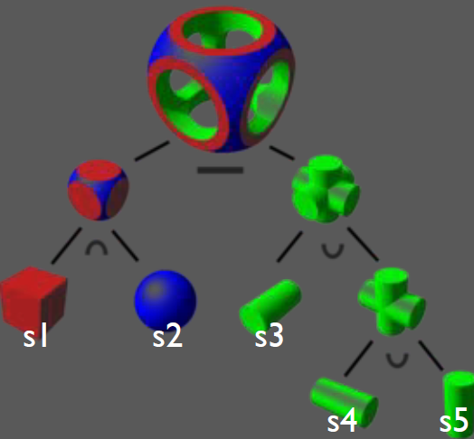
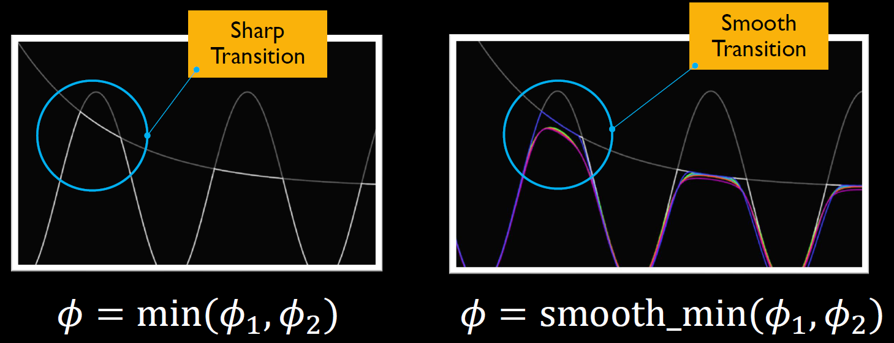
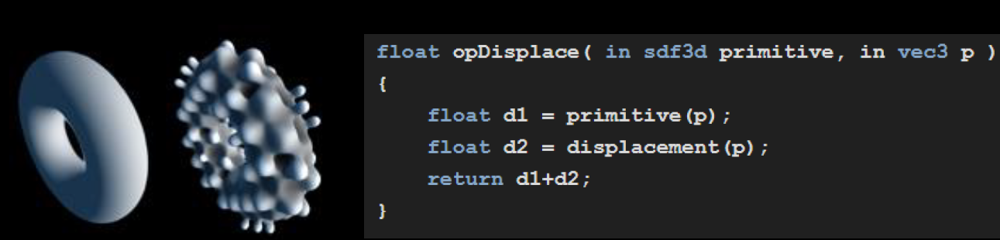

CS 8803 CGA - SDF Transformation and Combination
SDF Primitive Transformations
Examples: Tanslating Circle/Box SDF
1 | |
1 | |
General Approach
Recall the transformation matrices, we can get a transformed result simply by a matrix-vector multiplication.
To transform an SDF object, the key idea is to transform the query point instead of the SDF object. We simply transform the query point with the inverse of the transformation used to transform the object.
For example, if we want to translate an SDF object by (+1, -2), what we need to do is to translate every query point p by (-1, +2) and use it to query from the original SDF.
Similarly, we can use the same idea to rotate or scale an SDF object. For example, if we want to rotate an SDF by 30 degrees CCW, we can rotate the query point by 30 degrees CW and then query.
Example for matrix-based transformation
1 | |
SDF Primitive Combinations
Boolean operations
SDF Union: Mathematical Explaination
As shown in the figure below, the union of two SDFs is the shape that contains all points that are inside at least one of the two shapes.
- If and are both positive, then the point lies outside both shapes. The result is the shape closer to the surface.
- If one function is negative (inside a shape) and the other is positive, the result is inside the corresponding shape.
- If and are both negative, then the point lies inside both shapes. The min operation ensures that the result is still inside the shape.
- Therefore, for union,

SDF Intersection: Mathematical Explaination
The intersection of two SDFs is the shape that contains all points that are inside both shapes.
- If both SDFs are negative, the point lies inside both shapes. The result is the shape that contains the intersection of both.
- If one function is negative (inside a shape) and the other is positive, the result is outside the corresponding shape.
- If both SDFs are positive, the point lies outside both shapes. The result is the shape closer to the surface of the intersection.
- Therefore, for intersection,

SDF Complement
- Calculating the complement of a given SDF is simply negating its sign
- If a point is inside the shape (-), then it is outside the complement of the shape (+); the distance value remains the same.

SDF Intersection: Mathematical Explaination
- The subtraction of two SDFs is the shape that contains all points that are inside one but not the other.
- The easiest way to understand subtraction is to think of it as the intersection (where the max operation comes from) between the first shape () and the complement of the second shape (−).
- Therefore, for substraction, \phi(p) = max(\phi1(p), \-phi2(p))


Key Takeaways for SDF Boolean Operations

Boolean operations including union, intersection, and substraction can be easily extended to 3D.
Constructive Solid Geometry (CSG)
- CSG creates complex shapes by combining simpler ones
- It represents 3D objects through Boolean operations on primitive shapes
- Typically, we use a CSG tree to represent a 3D object in terms of its primitive shapes (e.g., sphere, cube, cylinder) and the Boolean operations (union, intersection, subtraction).
CSG tree
Definition
- A CSG tree is a hierarchical data structure used to represent a 3D object with its primitive shapes and the Boolean operations.
- The leaf nodes of the tree represent the basic primitives.
- The internal nodes represent the Boolean operations applied to the primitives or other subtrees.
- We typically construct a CSG tree in a bottom-up manner.
Construction
Construct a CSG tree based on primitives and operations in a bottom-up manner:
- Start with primitives: Use basic shapes like cubes, spheres, cones, cylinders, etc., as the leaves of the tree.
- Apply boolean operations: Combine primitives using Union, Intersection, or Subtraction. Internal nodes represent these operations.
- Build the tree recursively: Start from the leaf nodes (primitives) and apply the operations recursively. The root node represents the final operation that combines all primitives into the desired object.
Example: Construct CSG tree
Call the SDF Boolean operations step by step in a bottom-up way
1 | |

SDF Primitive Smooth Combinations
We expect to get rid of the visible edges between primitives caused by sculpting organic shapes by the union operation.
SDF Smooth Combination
Key Idea: Use a smooth version of min() and max() in Boolean operations to smooth the transition between two shapes.

How to define a smooth min/max()
One of the simple examples is:
- When a and b are similar: If a and b are close to each other, the exponential terms will be similarly sized, and the smooth minimum will be a value close to a and b.
- When a and b differ significantly: If one of the values is much larger than the other, the exponential terms will decay faster for the larger value, and the smooth minimum will approximate the smaller value more closely.
- When k is small, the function becomes less “smooth” and approximates a hard minimum. The transition between a and b happens more abruptly.
- When k is large, the function becomes smoother and the transition between a and b is gradual. The function behaves more like a weighted average than a minimum.
See IQ’s website for more implementations.
SDF Primitive Deformations
Add a small displacement field onto the original SDF field to model the small bumps on a surface.

Similar to the displacement mapping.